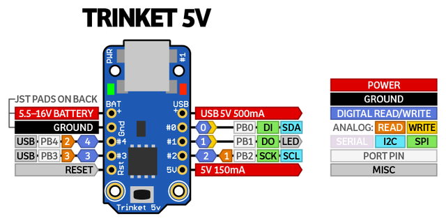

ARDUINO UNO & TRINKET
Brief meeting with Arduino Uno
My second task was to make a led working with my Trinket board.
Since my mates
had to do the same thing with Arduino Uno board, creating their own Fab ISP, I
decided to first start from Arduino UNO.
General info
 It is a board based on the ATmega328P which contains everything
needed to support the microcontroller: you simply have to connect it to a computer
with a USB cable or power it with a AC-to-DC adapter or battery to get started.
It is a board based on the ATmega328P which contains everything
needed to support the microcontroller: you simply have to connect it to a computer
with a USB cable or power it with a AC-to-DC adapter or battery to get started.
Technical Spec
| Characteristic | Value |
|---|---|
| Microcontroller |
ATmega328P |
| Operating Voltage |
5 V |
| Input Voltage (recommended) | 7-12 V |
| Input Voltage (limit) | 6-20 V |
| Digital I/O Pins | 14 (of which 6 provide PWM output) |
| PWM Digital I/O Pins | 6 |
| Analog Input Pins | 6 |
| DC Current per I/O Pin | 20 mA |
| DC Current for 3.3V Pin | 50 mA |
| Flash Memory |
32 KB (ATmega328P) of which 0.5 KB used by bootloader |
| SRAM | 2 KB (ATmega328P) |
| EEPROM |
1 KB (ATmega328P) |
| Clock Speed |
16 MHz |
| Length | 68.6 mm |
| Width | 53.4 mm |
| Weight |
25 g |
Programming
The UNO board can be programmed with Arduino Software.
Once you declared your board model and programmer (remember that Arduino itself can work as an ISP)
in "Tools" button in the toolbar, you can start compiling on Arduino's IDE.
Thanks to an high-level language, whose functions include several bitwise operations,and to the
great number of libraries avalaible, programming reveals to be quite simple:
few simple functions synthetise pages and pages of elementary codes, leading to the same result.
That helps when you don't have to care about what's happening at binary level and you're
just concerned about making your tools (pins, servo motors...) working.
Example: Blink
An exercise I did to get to know how to work with arduino was to reproduce
my MOrse-coded name with a pin lighting.
First of all I connected my Arduino Uno
to my notebook and opened Arduino Software. Then, I selected my board from the Tools
menu and its programmer (AVRISP mkll). I then selected and modified Blink
sketch (File>Examples>Basic>Blink).
This is my own final sketch.
#define LED 13
#define LED1 11
#define RITARDO 1000
void punto(int pin){
digitalWrite(pin, HIGH);
delay(200);
digitalWrite(pin, LOW);
delay(200);
}
void spazio(int ritardo) {
delay(ritardo);
}
void linea (int pin) {
digitalWrite(pin, HIGH);
delay(500);
digitalWrite(pin, LOW);
delay(200);
}
// the setup function runs once when you press reset or power the board
void setup() {
// initialize digital pin 13 as an output.
pinMode(LED, OUTPUT);
pinMode(LED1, OUTPUT);
delay(100);
}
// the loop function runs over and over again forever
void loop() {
punto(LED);
punto(LED);
punto(LED);
spazio(RITARDO);
punto(LED);
punto(LED);
spazio(RITARDO);
punto(LED);
linea(LED);
punto(LED);
punto(LED);
spazio(RITARDO);
punto(LED);
punto(LED);
punto(LED);
linea(LED);
spazio(RITARDO);
punto(LED);
punto(LED);
spazio(RITARDO);
punto(LED);
linea(LED);
spazio(RITARDO);
punto(LED1);
}
What I did, was to rearrange the default Blink sketch, in order to
produce a little more elaborated process and to write it in a simple way, so
as not to overturn most of the structure in case of need of a parameters change.
First of all I defined three functions in the heading of teh sketch: punto,
spazio and linea. That helps in reducing the number of action to
be declared in the loop and by means of specific names, it's possible to have an
immediate idea of the action that teh process is running at that step.
I made several attemps to find the suitable delays, since I had to differentiate
the space between points of the same letter(shorter delay) and between different
letters(longer delay). In addition, I added a second pin which has to light up once the word "S-I-L-V-I-A"
ends; therefore, I just had to write the basic Blink sketch for it, once defined the
pin number in the heading.
Great capacities into tiny dimensions: Trinket 5V
After achieving the basic skills of board programming with Arduino Uno, I focused my
attention onto my project electronic mate: Trinket 5V.

Despite its dimensions, this board is able of quite high performances, mostly thanks to
Atmel ATtiny85 microcontroller, which makes it perfect if you need a
board that's small enough to fit into any project.
In addition, it can be programmed with Arduino IDE, after downloading the libraries needed.
To work with Trinket 5V from Arduino's IDE it's necessary again to declare Board:"Adafruit Trinket 8MHz"
and Programmer:USBtinyISP from the Tools menu.
I used Adafruit's product to make TURNIGYTGY-2216MG servomotor work.
To start, I looked on the net about Servo.h.
This is the library Arduino uses to control servomotors and it contains specific functions
to mode rotation degrees, speed, repetitions.